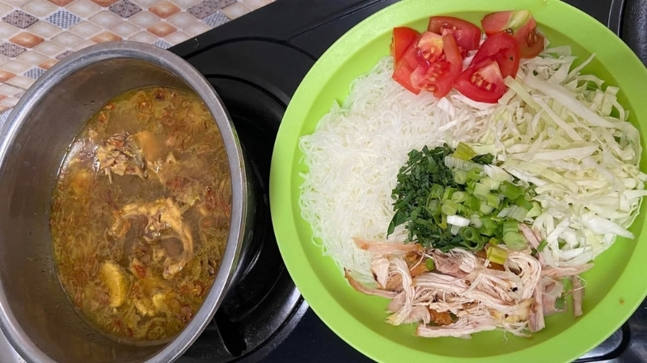

Galeri Soto Tauto Lani
Media Usaha



Nada Penanda Kedai
Nada uji singkat memastikan elemen audio dan kontrol browser dapat diperiksa.

Nada uji singkat memastikan elemen audio dan kontrol browser dapat diperiksa.